name: inverse layout: true class: center, middle, inverse --- #Brainhack 2019 ##Open Science Framework (OSF) --- #[OSF](https://osf.io/) ##The allrounder tool --- layout: false .left-column[ ## What is OSF? ] .right-column[ The Open Science Framework (OSF) is an open source software project that facilitates open collaboration in science research. <img src="images/OSF_logo.png" width="100%"> ] --- .left-column[ ## What is OSF? ## Manage your project ] .right-column[ #### Create a wiki 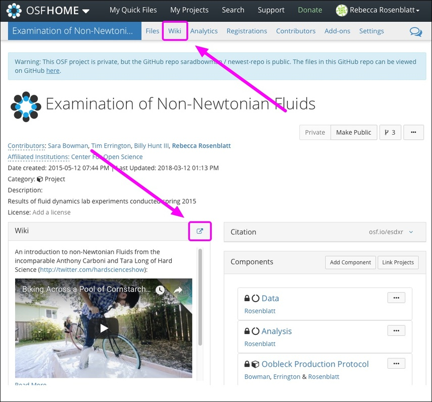 ] --- .left-column[ ## What is OSF? ## Manage your project ] .right-column[ #### Create folders 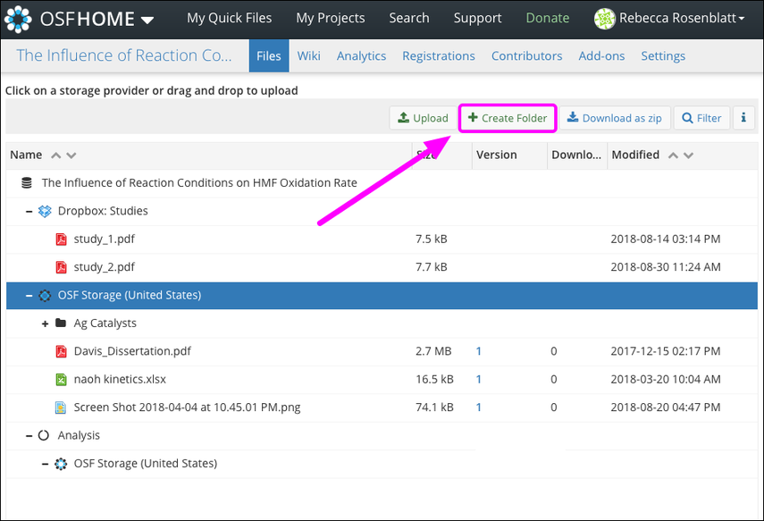 ] --- .left-column[ ## What is OSF? ## Manage your project ] .right-column[ #### Upload files 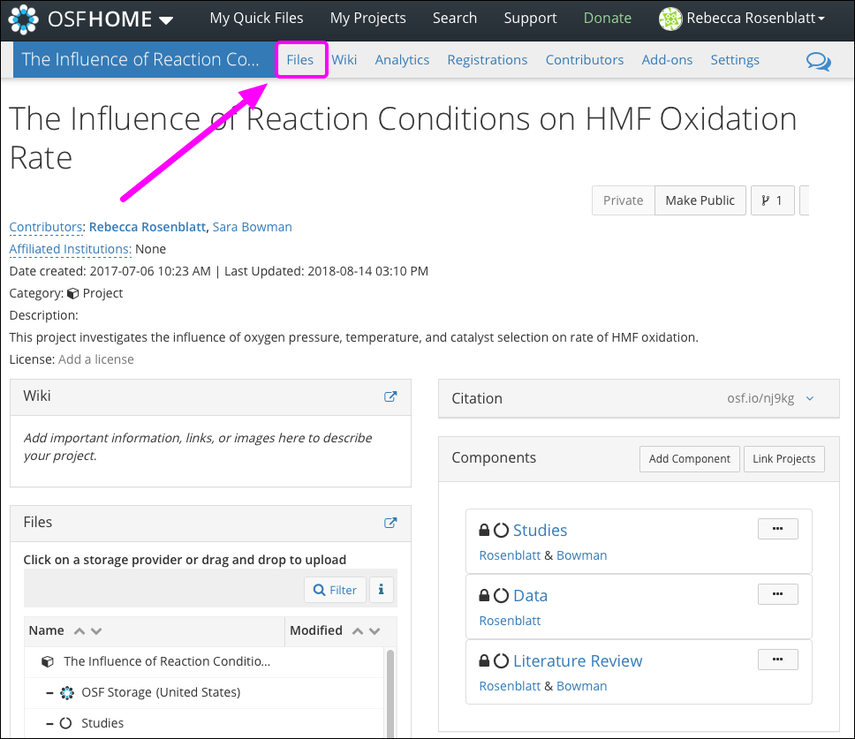 ] --- .left-column[ ## What is OSF? ## Manage your project ] .right-column[ #### Manage your files through *version control* 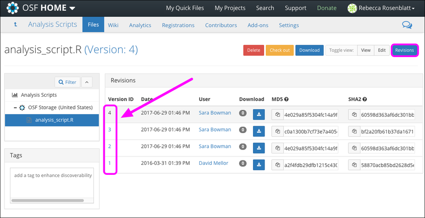 ] --- .left-column[ ## What is OSF? ## Manage your project ] .right-column[ #### Use add-ons... 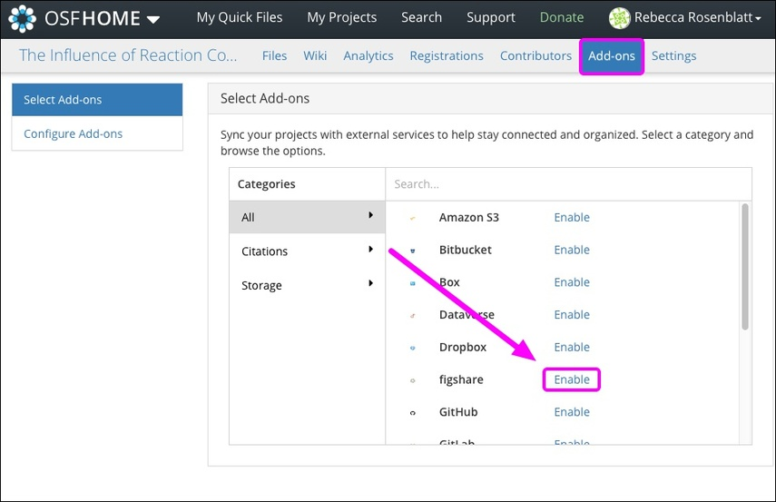 ] --- .left-column[ ## What is OSF? ## Manage your project ] .right-column[ #### ... that automatically will be embedded in your project 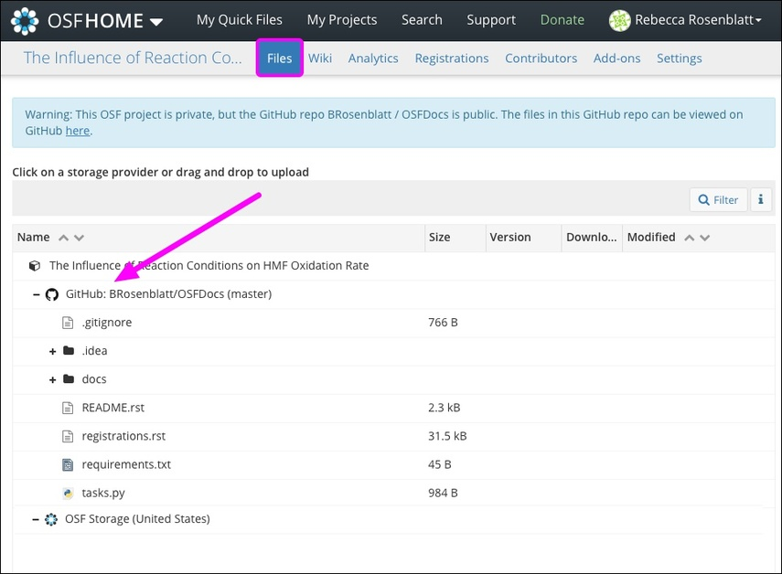 ] --- .left-column[ ## What is OSF? ## Manage your project ## Collaborate ] .right-column[ #### Add contributors 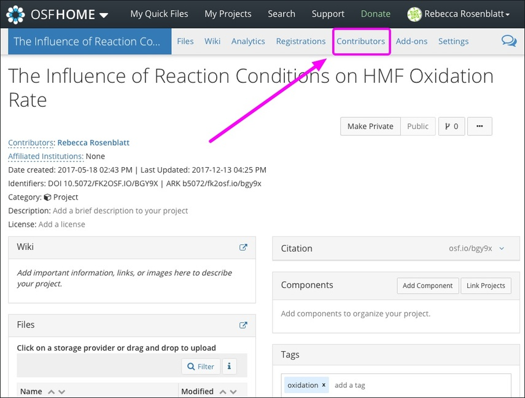 ] --- .left-column[ ## What is OSF? ## Manage your project ## Collaborate ] .right-column[ #### Fork your project 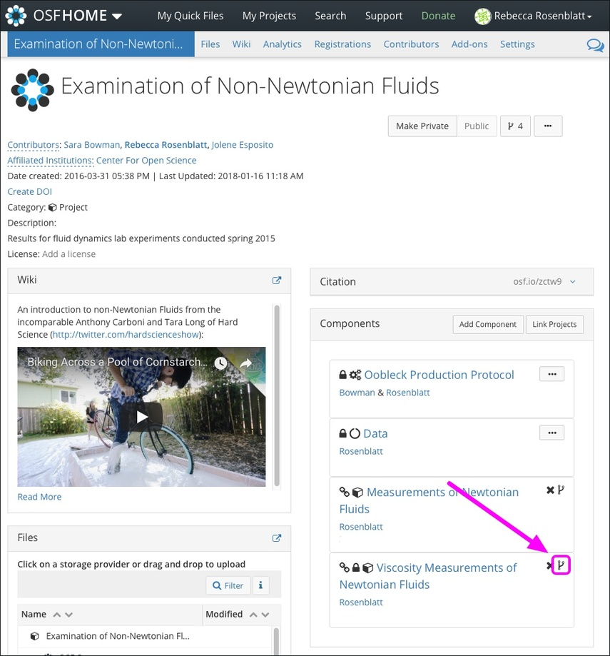 ] --- .left-column[ ## What is OSF? ## Manage your project ## Collaborate ] .right-column[ #### Comment 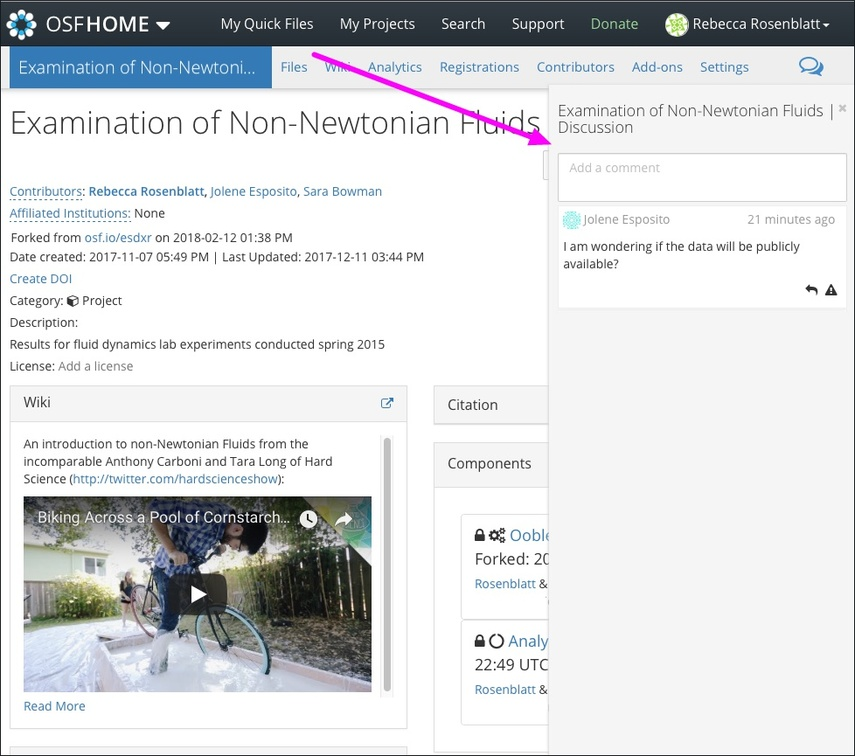 ] --- .left-column[ ## What is OSF? ## Manage your project ## Collaborate ] .right-column[ #### View recent activity 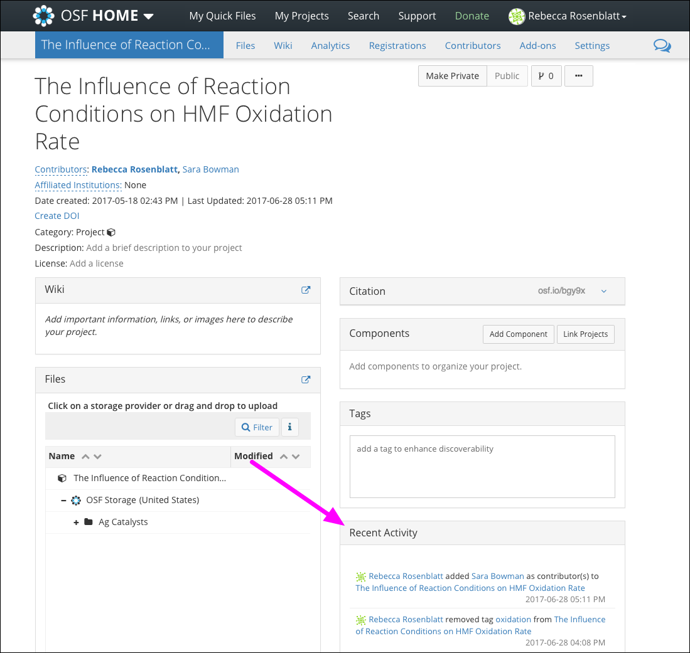 ] --- .left-column[ ## What is OSF? ## Manage your project ## Collaborate ## Share your work ] .right-column[ #### Make your project public 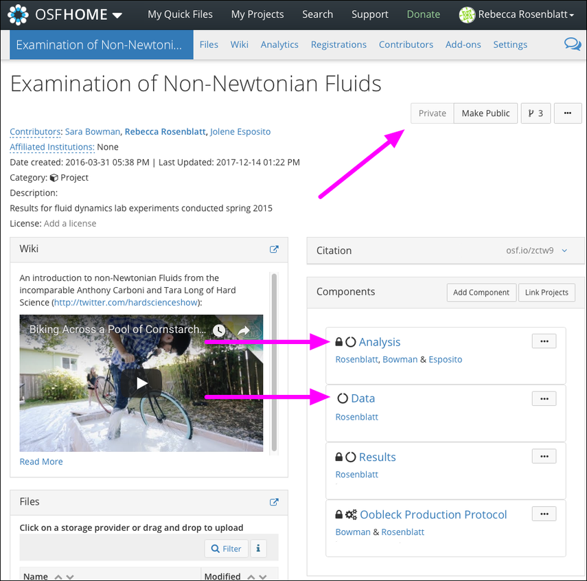 ] --- .left-column[ ## What is OSF? ## Manage your project ## Collaborate ## Share your work ] .right-column[ #### Tag your project 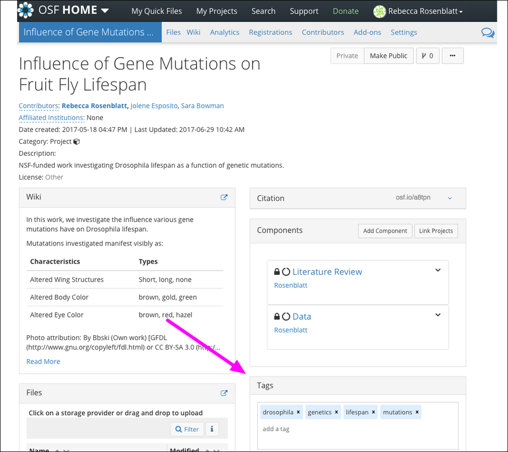 ] --- .left-column[ ## What is OSF? ## Manage your project ## Collaborate ## Share your work ] .right-column[ #### Report about your work on social media platforms 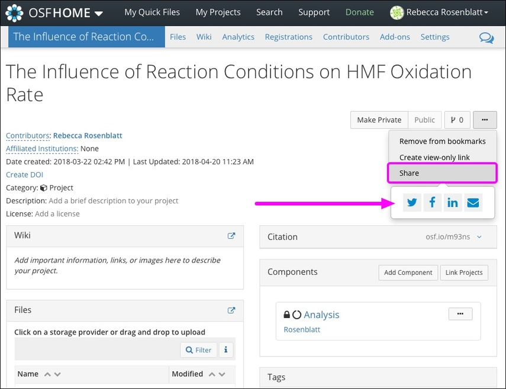 ] --- .left-column[ ## What is OSF? ## Manage your project ## Collaborate ## Share your work ## Publish ] .right-column[ #### Make your project citable 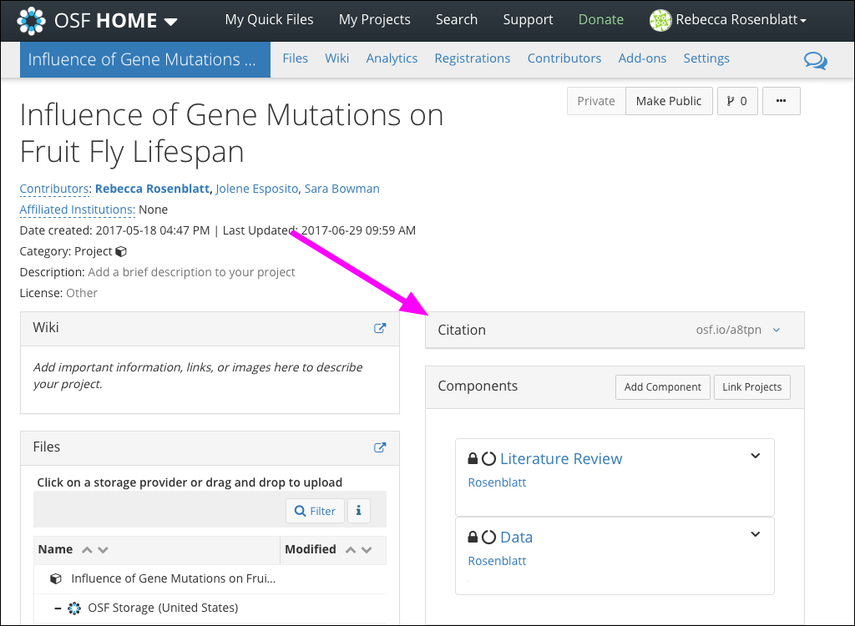 ] --- .left-column[ ## What is OSF? ## Manage your project ## Collaborate ## Share your work ## Publish ] .right-column[ #### Register your project 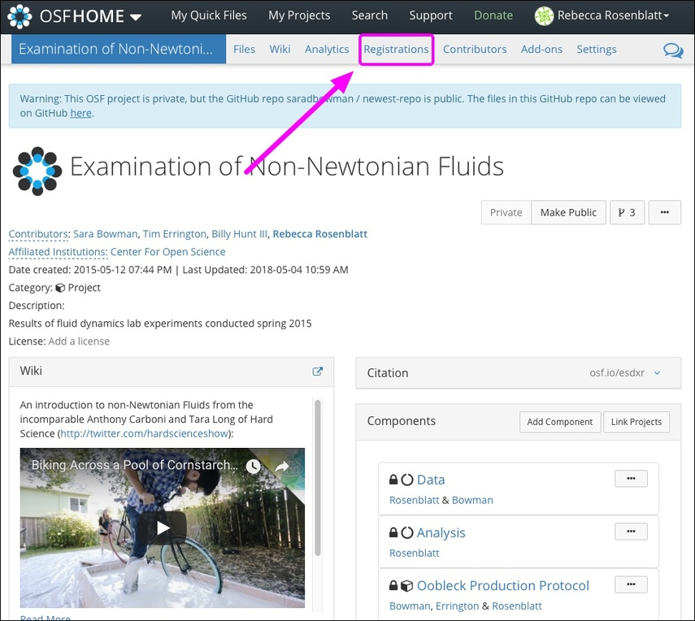 ] --- .left-column[ ## What is OSF? ## Manage your project ## Collaborate ## Share your work ## Publish ] .right-column[ #### Publish a preprint 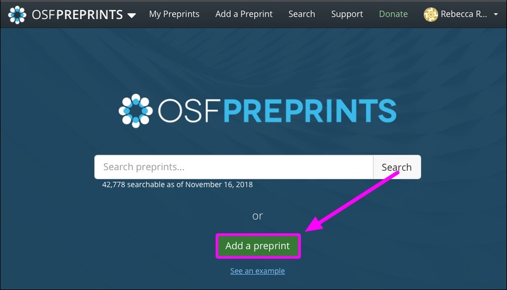 ] --- .left-column[ ## What is OSF? ## Manage your project ## Collaborate ## Share your work ## Publish ## Enjoy... ] .right-column[ #### ...all the features of OSF <img src="images/OSF_features.png" width="100%"> (source: https://guides.nyu.edu/data_management/osf) ] --- template: inverse # Questions? --- template: inverse ## Now... create an account on OSF and [try it out](https://osf.io/)! 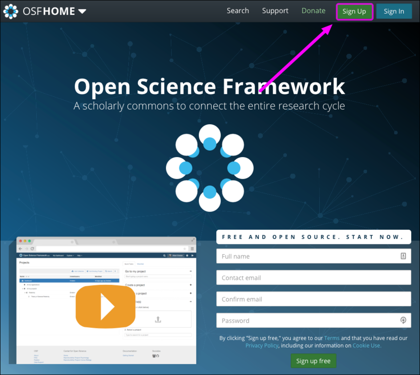